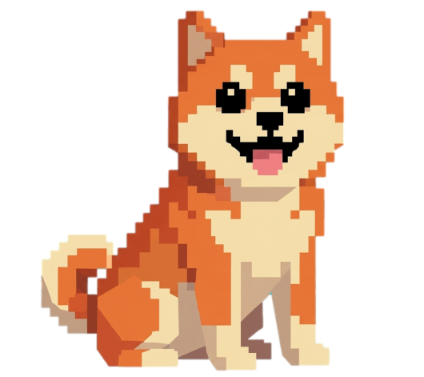

「わんこ」はスマホの使いすぎを知らせてくれるパートナー。あなたがスマホを休ませるほど、わんこは元気になります。
スマホを使いすぎると、わんこのエナジーが減り「病気」になってしまいます。わんこの健康を守るためにデジタルデトックスを。
タップしてなでてあげると、鳴き声を出して喜びます。お腹が空いている時はごはんをあげてお世話しましょう。
22時から朝7時まで、わんこは眠ってしまいます。夜更かしを控え、わんこと一緒に規則正しい生活を目指しましょう。